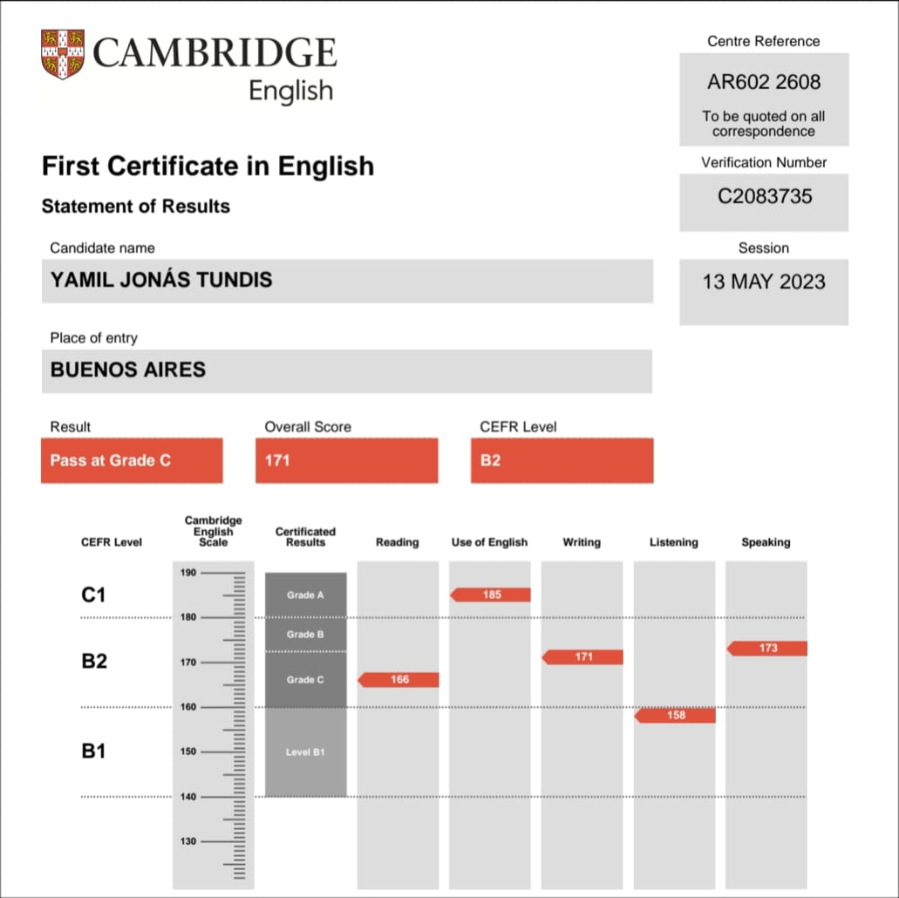

Estudios
Volver al inicio
-
2017-2022
Secundario en el colegio "San Mauro" de Quilmes
Red social
-
2023 - Actualidad
UTN-FRLP - Ingenieria en Sistemas - 3er año
Pagina web
-
2013-2021
Clases de Ingles en el instituto "Cambridge High School"
Pagina web
-
2023
FCE (First Certificate Exam): Nivel B2
